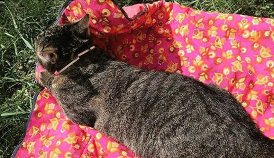
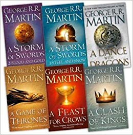
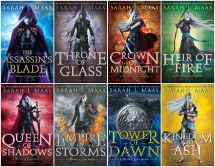
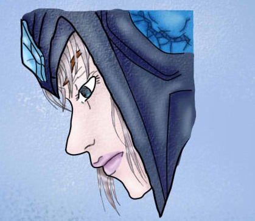
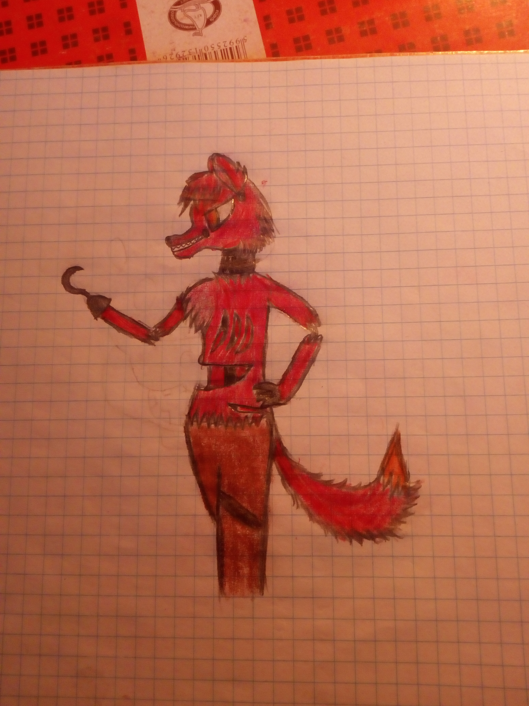

A nevem Kollár Gvendolin és 2004. március 5-én születtem Budapesten. A szüleimmel és a testvéremmel élek együtt.
| Van egy kutyám, aki néha a Sony névre hallgat. | Volt egy macskám, aki februárban elpusztult. |
|---|---|
| |
 |
Szabadidőmben sokat szoktam olvasni, elsősorban fantasy könyveket.  
| Ha nem olvasok, akkor általában rajzolok, de elsősorban digitálisan. | |
|---|---|
|  |  |
Törökugrató Általános Iskola
BMSZC Neumann János Számítástechnikai Szakgimnáziuma